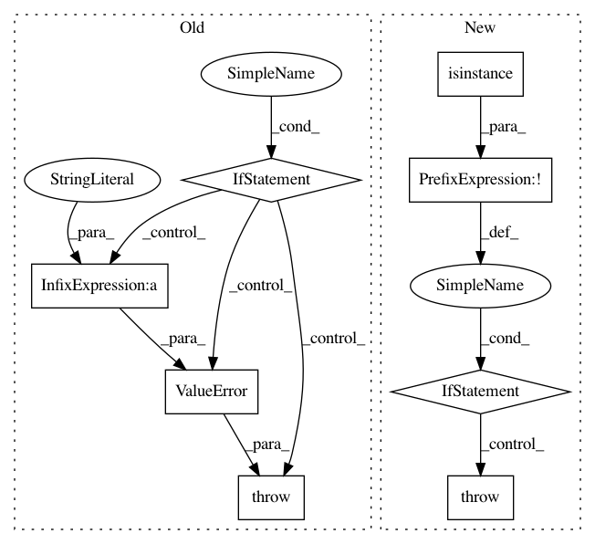

c22e6a2919a9d1b49335b6fede01852cf01395a2,snorkel/learning/gen_learning.py,GenerativeModel,train,#GenerativeModel#,72
Before Change
// Check to make sure matrix is int-valued
element_type = type(L[0,0])
if not element_type in [np.int64, np.int32, int]:
raise ValueError(Label matrix must have int-type elements,
but elements have type %s % element_type)
// Automatically infer cardinality
// Binary: Values in {-1, 0, 1} [Default]
// Categorical: Values in {0, 1, ..., K}
if cardinality is None:
// If candidate_ranges is provided, use this to determine cardinality
if candidate_ranges is not None:
cardinality = max(map(max, candidate_ranges))
After Change
step_size = step_size or 0.0001
// Check to make sure matrix is int-valued
if not (isinstance(L[0,0], np.int64) or isinstance(L[0,0], np.int32) or isinstance(L[0,0], int)):
raise ValueError(Label matrix must have int-type elements,
but elements have type %s % type(L[0,0]))
// Automatically infer cardinality
// Binary: Values in {-1, 0, 1} [Default]
// Categorical: Values in {0, 1, ..., K}
if cardinality is None:
// If candidate_ranges is provided, use this to determine cardinality
if candidate_ranges is not None:
cardinality = max(map(max, candidate_ranges))
In pattern: SUPERPATTERN
Frequency: 3
Non-data size: 8
Instances
Project Name: snorkel-team/snorkel
Commit Name: c22e6a2919a9d1b49335b6fede01852cf01395a2
Time: 2017-08-23
Author: dnicholson329@gmail.com
File Name: snorkel/learning/gen_learning.py
Class Name: GenerativeModel
Method Name: train
Project Name: nilmtk/nilmtk
Commit Name: 72f3f5bf50ed2d91cdcfbe2cf47120a2df8883cd
Time: 2014-11-26
Author: jack-list@xlk.org.uk
File Name: nilmtk/results.py
Class Name: Results
Method Name: append
Project Name: rasbt/mlxtend
Commit Name: 9b292db701a05ec2748be18d51a8bc52b98c646c
Time: 2016-07-14
Author: mail@sebastianraschka.com
File Name: mlxtend/evaluate/decision_regions.py
Class Name:
Method Name: plot_decision_regions